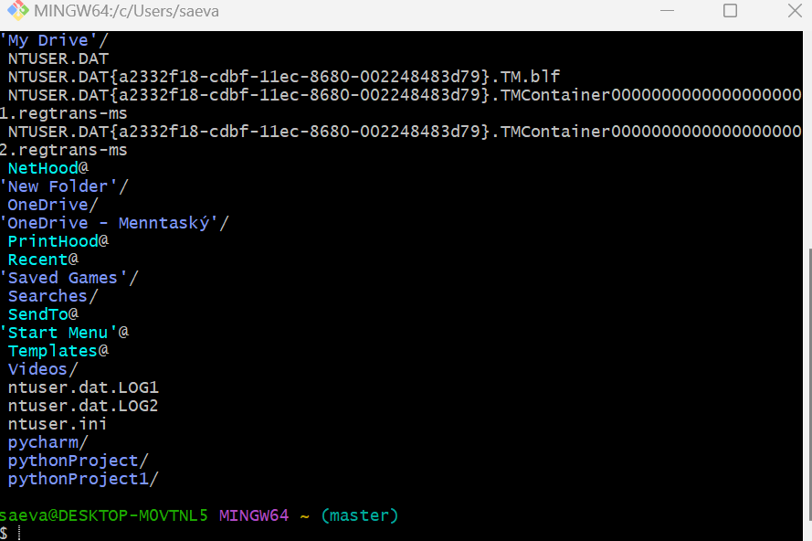
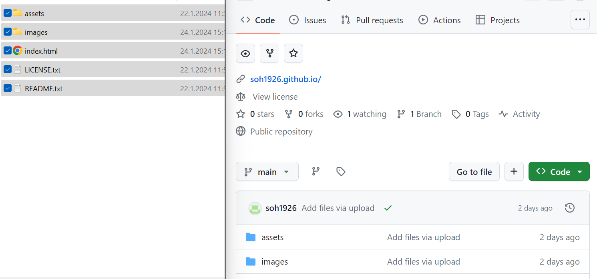
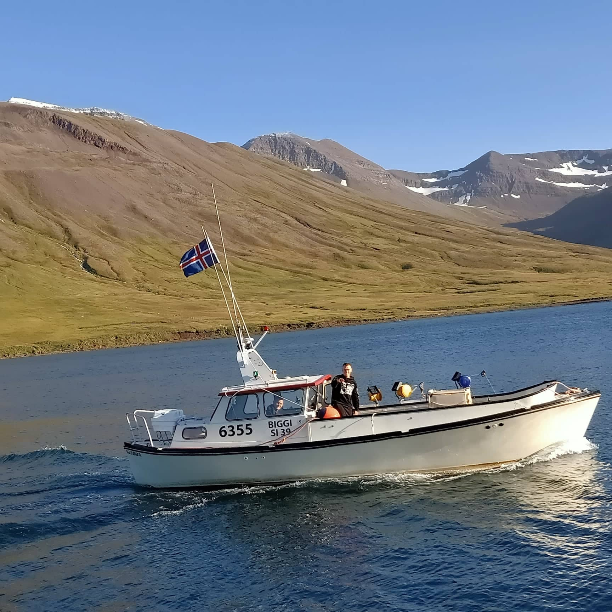
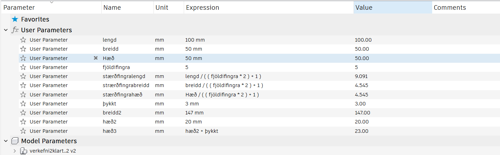

Velkominn í áfangann Tölvustudd framleiðsla VÉL608G
Verkefni 1
Sniðmátið af þessari síðu er sótt af html5up.net og var innblásturinn fenginn af því hversu snirtileg síðan var og hversu einfalt er að skoða upplýsingar á henni. Gott finnst mér að vinna með síðu sem er græn þar sem hún minnir á sumarið þegar grasið er sem grænast og gerir mig því rólegan þegar ég er að vinna á henni. Auðvellt er að finna undirsíður þar sem maður getur bæði skrollað og fundið þannig titlana, einnig er hægt að smella í hornið þar sem poppar upp hvaða kafla þú villt skoða. Auðvitað var hugsað út í það að hafa síðu sem væri mjög flott og einstök en einfaldleikinn er besta skipulagið. Myndir voru fengnar frá Persónulegum albúmum og einnig samfélagsmiðlum. Ég lærði svo hvernig ætti að setja upp síðuna með því að skoða kóða frá þessari síðu og öðrum síðum einnig og fiktaði mig þannig áfram, chat gpg hjálpaði einnig mikið og youtube myndbönd líka. Þegar ég var að setja upp git þá lenti ég í algjöru veseni þar sem bashið var alltaf að banna mér að fara inn í skránna og var það eflaust vegna þess að það fór alltaf leið inn á onedrivið hjá mér.

Ég hélt að það væri ekkert til að laga þetta þar til ég talaði við bekkinn minn um hvort að þau væru að lenda í einhverju veseni með þetta. Þá fékk ég það svar að allir voru að draga skrárnar sínar yfir í github.

Eftir að búið var að leysa vandann með github þá fór ég og bjó til ferilskránna mína þar sem ég náði í myndir frá facebook og persónulegum albúmum og fann upplýsingar um vinnurnar mínar. Ég las mig til um hvernig ætti að setja linka inn á síðuna og hvernig ætti að lagfæra myndir með chatgpg og myndböndum á youtube, þar lærði ég hvernig ætti að færa myndir til og minnka þær.
Markmiðin mín í áfanganum og lokaverkefni.
Mig langar rosalega til að verða góður á git og geta unnið meira með heimasíðuvinnslu. Getað unnið með verkefnastjórnun og þróa hannanir með mikinn skilning á markmiðunum. Skilja framleiðslubúnað og geta notað hann til síðari vinnu. Fyrir lokaverkefnið mitt langar mig að gera eitthvað sem tengist þrívíddarprentunn og skoða hvernig sú tækni virkar betur.
Verkefni 2
KERF prófun
KERF prófunina vann ég með Kolbrúnu og Þorra. Við byrjuðum á því að velja okkur laserskera og mæla KERF-ið í honum. Það gerðum við með því að velja efni sem við notum svo í verkefninu sjálfu. Við völdum glæran akríl. Við teiknuðum í Inventor upp 10 kassa með lengd 10mm og breidd 10mm. Settum svo teikninguna í Inkscape og skárum svo með laser. Þegar laserinn var búinn að skera tókum við kassana og mældum þá með skífmáli og svo tókum við bilið og mældum það einnig með skífmáli. Bilið var 100,8mm og kassarnir voru 98,9mm. Til að finna KERF tókum við mismuninn af bilinu og kössunum 100,8mm - 98,9mm = 1,9mm og deildum því með fjölda lína 1,9mm / 11 = 0,173mm.Vínylskeri
Hér ákvað ég að gera eitthvað sniðugt og skemmtilegt fyrir bátinn minn, þá hugsaði ég afhverju geri ég ekki bara límmiða af bátnum mínum, svo ég hófst handa við að finna góða mynd af bátnum mínum og ég endaði á því að nota eftirfarandi mynd:
Svo var sett þessa mynd inn í converter þar sem var tekið allt umhverfi í burtu og þá varð myndin alveg einangruð og því næst var hún sett í incscape, þar var stærðin leiðrétt svo að allt myndi vera klárt í skurð.

Útkoman á límmiðanum kemur svo seinna en markmiðið mitt er að setja hann á bátinn minn og um leið og hann kemur á bátinn verður límmiðinn settur á hann. Umsjónarmaður áfangans gaf mér leyfi til að fá strekara efni í þeim tilgangi að fá að líma hann á bátinn, hann á að geta haldist á í hörðum veðurskilyrðum.
Parametrískur laser skurður.
1Parametrískur laser skurður:
Áður en skorið var út þá var fyrst prufað að prenta tvo kassa, þar kom í ljós að þeir voru ekki nógu pressfittaðir. Ég talaði því við fólkið sem var í áfanganum um það og þar var mér sagt að hækka KERF-ið í 0,81, eftir það passaði allt mjög vel.2Parametrískur laser skurður:
Þegar ég byrjaði að hugsa hvað ég ætti að gera í þessum hluta verkefnisins þá hugsaði ég, hvað vantar mig, eða hvað þarf ég í líf mitt akkúrat núna? Þá varð mér ljóst að ég hefði hent hillunum mínum um daginn og hafði því engann stað til að geyma hluti sem voru þar áður, þ.e. sími, heyrnatol og svo framvegis. Því var hugmyndin að smíða lítið hillubox sem myndi vera á skrifborðinu mínu. Byrjað var á því að horfa á myndband á canvas um hvernig parametrar virka í Fusion 360 og hvernig má nota þá til þess að hanna góðar pressfitt festingar. Þar var farið yfir það hvernig átti að setja inn gildi fyrir parametra í fusion og gerði ég eftir honum hvernig átti að setja það fram. Parametrar eru góð leið til þess að hanna hlut þar sem það þarf ekki að breyta allri hönnunni ef breytt er um stærðir. Ég byrjaði á því að setja parametrana mína upp líkt og sést á myndinni fyrir neðan, nema auðvitað bættust svo við parametrar þegar leið á verkefnið þar sem ég bætti við fullt af hugmyndum í ferlinu.
Þegar ég var búinn að búa til kassann ákvað ég að reyna að gera hillu sem hafði pláss fyrir mitt helsta dót og fannst mér sniðugt að gera pláss fyrir tvo hluti í lokuðu rými(blátt), einn í semi lokuðu(rautt), tvo í alveg opnu(gult) og svo pláss fyrir símann minn(fjólublátt).


Kassinn er speglaður þannig allt er eins á hægri og vinstri hlið hans. Festipunktarnir eru litaðir bláir og festa þeir kassann saman, rauðmerkta hliðin sýnir svo hliðina sem er ekki fest en ekki var hægt að festa hana því það var fest við botninn í miðju og hliðina sem fer upp.

Fyrir aftan þá lét ég festi punktana vera á þeim stöðum sem hægt var að hafa þá á en ég ákvað að hafa aðalfestipunktinn fyrir miðju þar sem hjartað á hlutnum er. Ekki var svo heldur hægt að festa þarna fyrir lengsta kubbinn neðst þar sem festinginn var notuð fyrir neðri kassann. Því small þetta allt saman. þegar búið var að hanna allt í Fusion þá var hafist höndum að græja fyrir skurðinn, þá var byrjað á að horfa á myndband af canvas frá fablab akureyri.